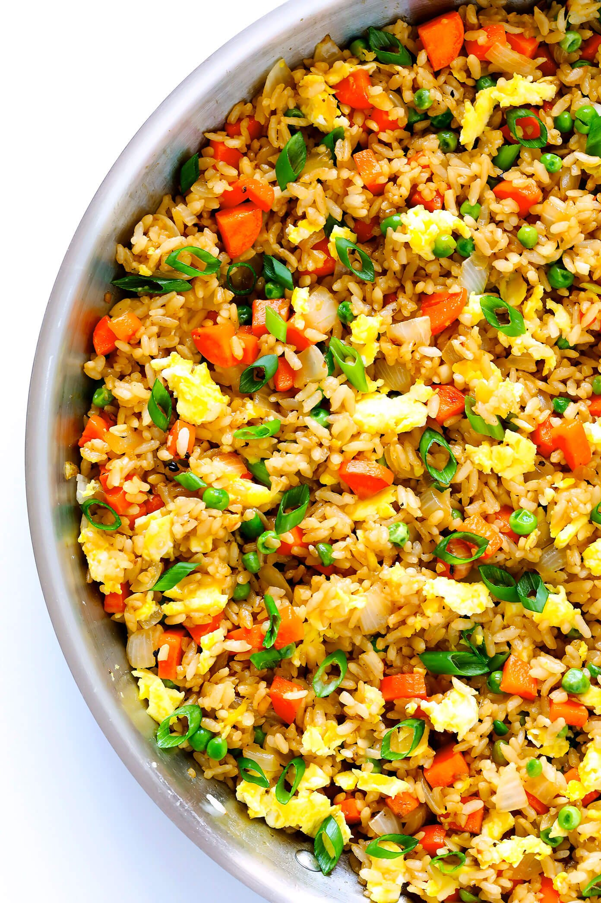

Egg Fried Rice

Description
Fried rice is a dish of cooked rice that has been stir-fried in a wok
or a frying pan and is usually mixed with other ingredients such as eggs,
vegetables, seafood, or meat. It is often eaten by itself or as an accompaniment
to another dish. Fried rice is a popular component of East Asian,
Southeast Asian and certain South Asian cuisines, as well as a staple
national dish of Indonesia. As a homemade dish, fried rice is typically
made with ingredients left over from other dishes, leading to countless
variations. First developed during the Sui Dynasty in China and as such
all fried rice dishes can trace their origins to Chinese fried rice.
Ingredients
- Cooked, chilled rice. Either white or brown.
- Eggs
- Carrots, onions, green onions, and peas
- Garlic, freshly minced
- Soy Sauce
- Oyster sauce
- Toasted sesame oil
- butter
Directions
- Scramble eggs: Using a small pat of butter, scramble some
eggs in a large sauté pan, breaking them into small pieces
as you go. Then transfer the eggs to a separate plate, and set aside.
- Sauté veggies and garlic: Return your sauté pan to the
heat, and sauté the onions, carrots, peas and garlic until
soft and cooked through.
- Stir fry rice: Then turn the burner to high heat. Scooch
the veggies over to one side of the pan, melt the remaining
butter in the other half, and add the chilled rice, soy sauce,
and oyster sauce (if using). Then stir to combine with the
veggies and continue sautéing the rice, stirring every 15-20
seconds or so for 3 minutes, or until you notice the rice and
veggies starting to brown slightly.
- Remove pan from heat. And stir in your green onions, sesame oil, and scrambled eggs.
- Taste and season. Give the rice a taste, and season with
salt and pepper, plus any extra soy sauce or sesame oil if needed.
- Serve! Then dish it up and serve nice and warm!